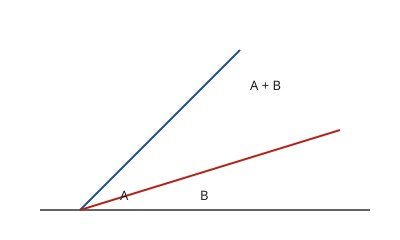

<script src="/assets/redirect.js"></script>
<section class="theory" data-section="P23-3.2">
<h2>3.2 Compound angle formulae</h2>
<p class="src">Based on Cambridge International AS &amp; A Level Mathematics: Pure Mathematics 2 &amp; 3 Coursebook, Chapter 3, printed pp.58–60 (the compound angle formulae). Printed pages were read from P23.pdf (printed 58–60 = PDF 70–72). Own wording and new numbers.</p>
<p class="key-words"><strong>Key words:</strong> <em>compound angle formulae</em></p>
<p>The <strong>compound angle formulae</strong> expand the sine, cosine and tangent of a sum or a difference:</p>
<p>\(\sin(A+B)\equiv\sin A\cos B+\cos A\sin B\), \(\sin(A-B)\equiv\sin A\cos B-\cos A\sin B\),</p>
<p>\(\cos(A+B)\equiv\cos A\cos B-\sin A\sin B\), \(\cos(A-B)\equiv\cos A\cos B+\sin A\sin B\),</p>
<p>\(\tan(A+B)\equiv\dfrac{\tan A+\tan B}{1-\tan A\tan B}\), \(\tan(A-B)\equiv\dfrac{\tan A-\tan B}{1+\tan A\tan B}\).</p>
<figure>

<figcaption>The compound angle \(A+B\) is expanded by the formulae above; it is not true that \(\sin(A+B)=\sin A+\sin B\).</figcaption>
</figure>
<div class="worked-example"><h4>Worked example 1</h4>
<p class="src">Book: Key point 3.3 style, printed pp.58–60. New numbers using a special angle whose sine is an integer.</p>
<p>Find the exact value of \(\sin(30^\circ+60^\circ)\).</p>
<ol class="steps">
<li>\(\sin(30^\circ+60^\circ)=\sin 90^\circ=1\). (The expansion \(\sin 30^\circ\cos 60^\circ+\cos 30^\circ\sin 60^\circ=\dfrac{1}{2}\cdot\dfrac{1}{2}+\dfrac{\sqrt{3}}{2}\cdot\dfrac{\sqrt{3}}{2}=1\) confirms the same value.) <span class="mark">A1</span></li>
</ol></div>
<div class="worked-example"><h4>Worked example 2</h4>
<p class="src">Book: the expansion of sine of a sum has two terms. New wording.</p>
<p>How many terms are there on the right-hand side of the formula for \(\sin(A+B)\)?</p>
<ol class="steps">
<li>There are 2 terms: \(\sin A\cos B\) and \(\cos A\sin B\). <span class="mark">A1</span></li>
</ol></div>
<h3>Common mistakes</h3><ul>
<li>Writing \(\sin(A+B)=\sin A+\sin B\), which is false.</li>
<li>Using a plus sign in \(\cos(A+B)\) between the two products; the identity has a minus.</li>
</ul>
<div class="quick-check" data-q="QC1">
<h4>Quick check 1</h4>
<p>Find the exact value of \(\sin(30^\circ+60^\circ)\).</p>
<details>
<summary>Show answer</summary>
<ol class="steps">
<li>\(\sin 90^\circ=1\). <span class="mark">A1</span></li>
</ol>
<p class="final">\(1\)</p>
</details>
</div>
<div class="quick-check" data-q="QC2">
<h4>Quick check 2</h4>
<p>How many terms are there on the right-hand side of the formula for \(\sin(A+B)\)?</p>
<details>
<summary>Show answer</summary>
<ol class="steps">
<li>There are 2 terms. <span class="mark">A1</span></li>
</ol>
<p class="final">\(2\)</p>
</details>
</div>
<div class="quick-check" data-q="QC3">
<h4>Quick check 3</h4>
<p>Find the exact value of \(\cos(0^\circ+0^\circ)\).</p>
<details>
<summary>Show answer</summary>
<ol class="steps">
<li>\(\cos 0^\circ=1\). <span class="mark">A1</span></li>
</ol>
<p class="final">\(1\)</p>
</details>
</div>
<h3>Past paper</h3>
<p class="src">9709/21/O/N/11 Question 8(i) only, 5 marks. Official QP and MS. Question 1 of this paper was already used in P23-1.3. Part (ii) is an integral and is omitted.</p>
<p>(i) By first expanding \(\cos(2x+x)\), show that \(\cos 3x\equiv 4\cos^3 x-3\cos x\). [5]</p>
<details><summary>Show official scheme</summary>
<ol class="steps">
<li>Make relevant use of the \(\cos(A+B)\) formula. Official MS: M1 (starred). <span class="mark">M1</span></li>
<li>Make relevant use of the \(\cos 2A\) and \(\sin 2A\) formulae. Official MS: M1 (starred). <span class="mark">M1</span></li>
<li>Obtain a correct expression in terms of \(\cos x\) and \(\sin x\). Official MS: A1. <span class="mark">A1</span></li>
<li>Use \(\sin^2 x=1-\cos^2 x\) to obtain an expression in terms of \(\cos x\). Official MS: M1 dependent on the starred method marks. <span class="mark">M1</span></li>
<li>Obtain the given answer correctly. Official MS: A1. <span class="mark">A1</span></li>
</ol></details>
</section>
